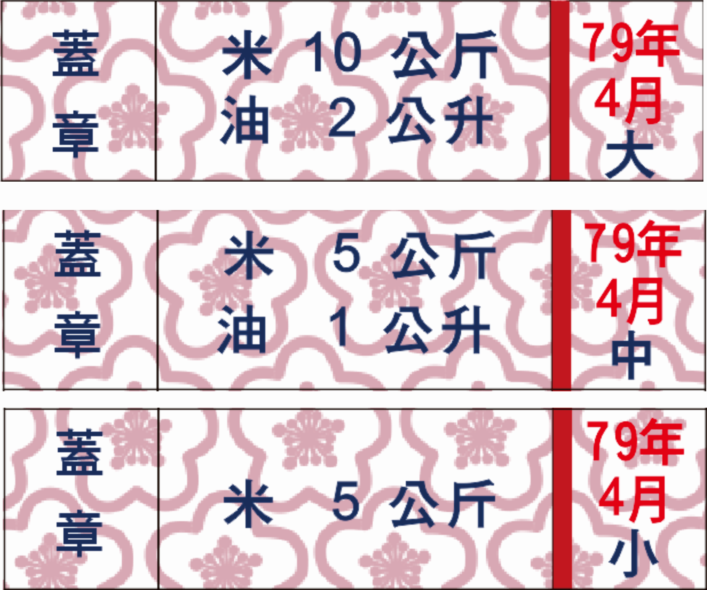
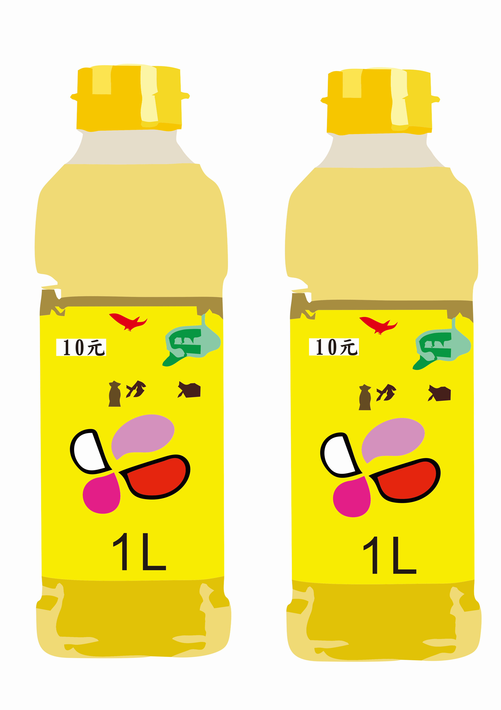
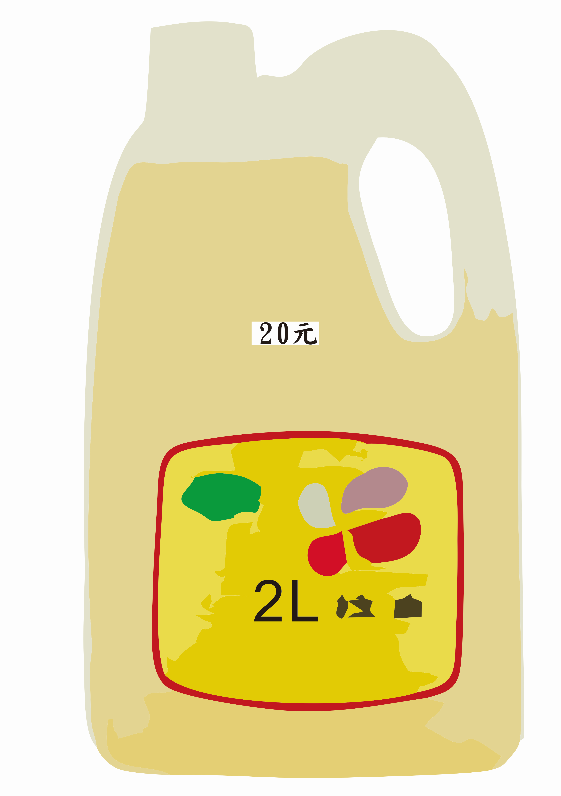
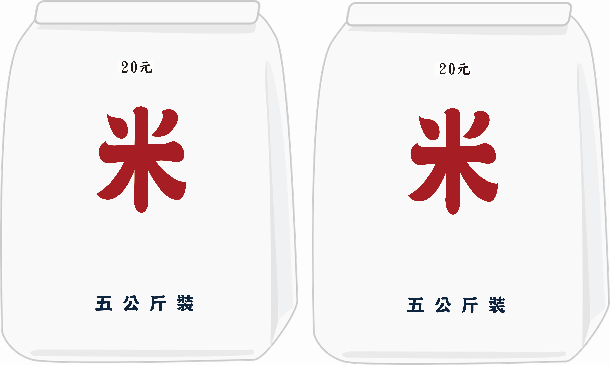
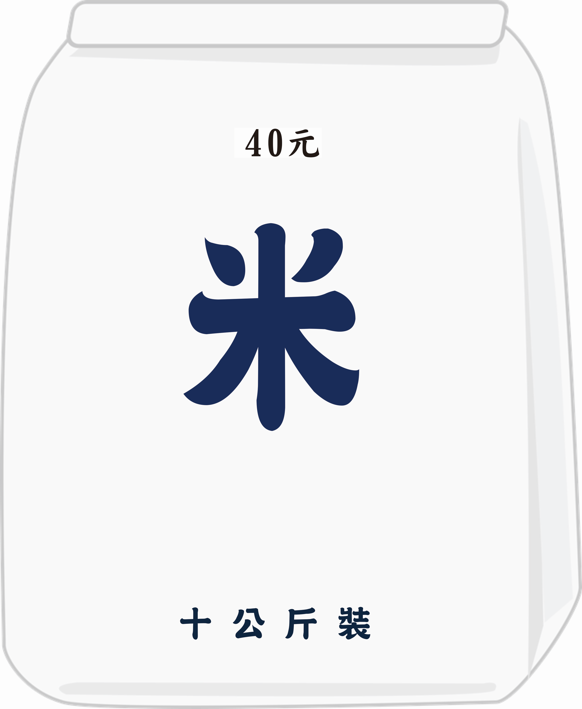
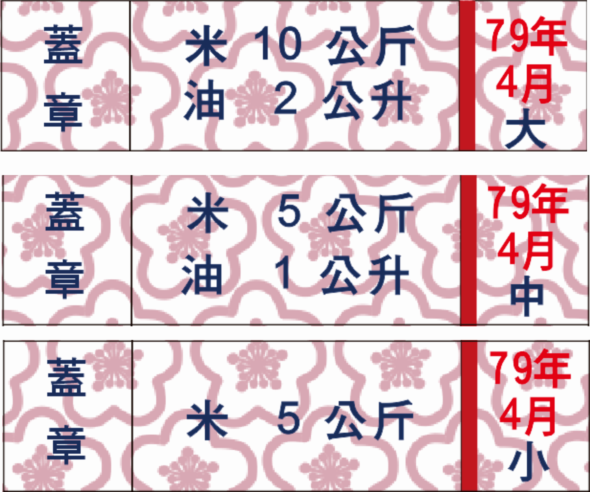
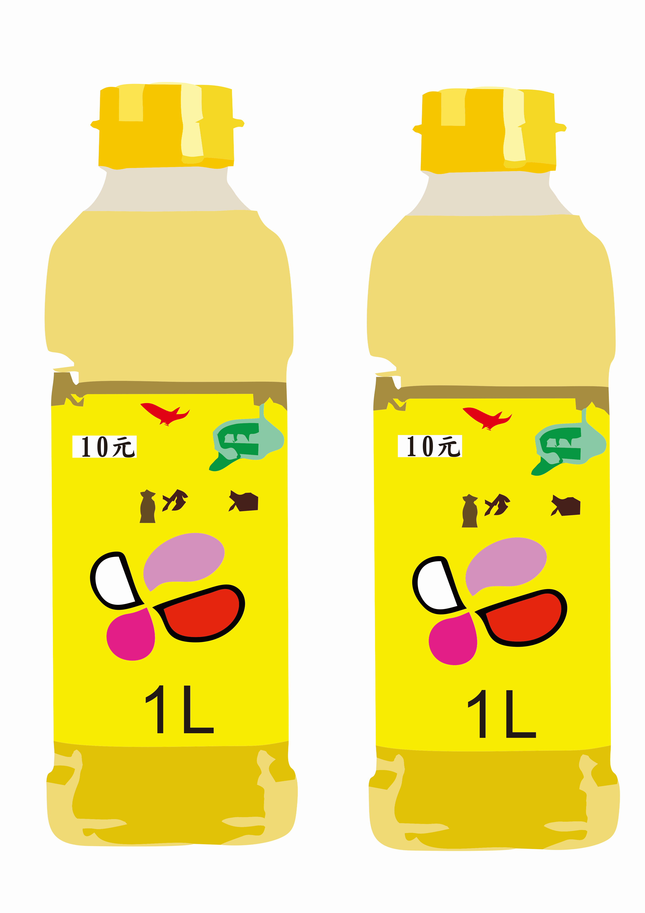
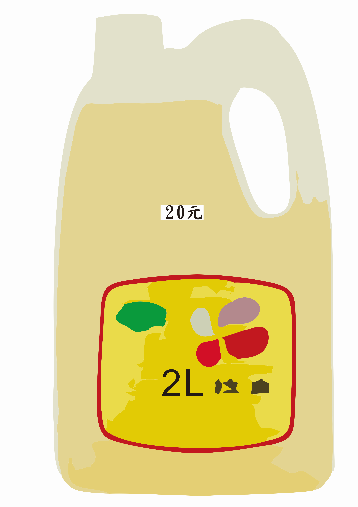
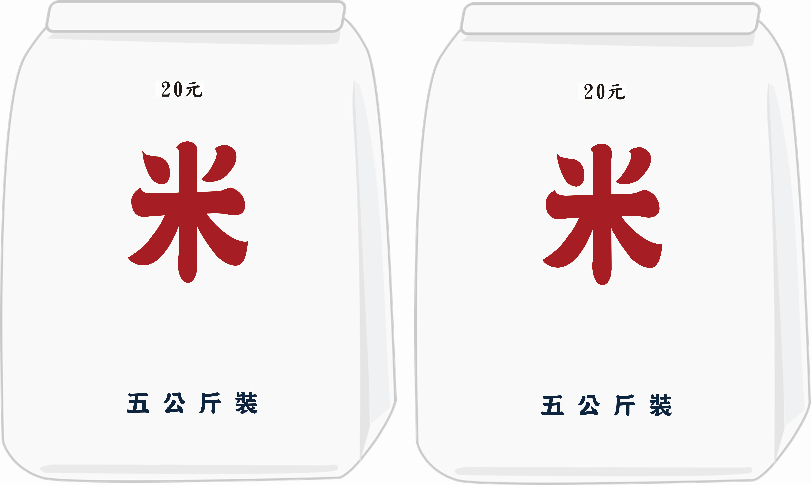
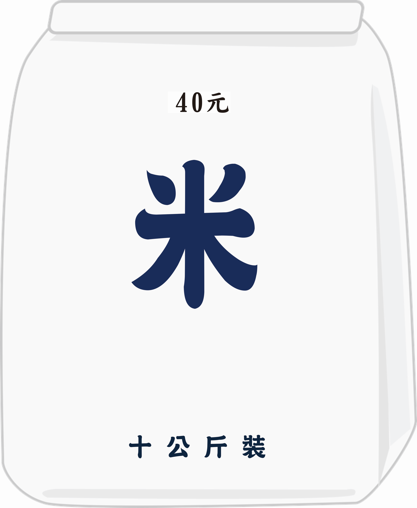

鑰匙的位置我好像有一點印象,但還是有一點模糊。我發現天色已晚，突然想起媽媽交代我要拿糧票去雜貨店換油與米，我趕緊回家去拿放在抽屜裡的糧票，前往雜貨店。
請幫忙算一算，若王媽媽將整個月全家的糧票都換成了現金，崔媽媽要拿給王媽媽多少錢呢?
提示：
「中華民國退伍軍人眷屬補給證」，簡稱「眷補証」，根據眷屬人口及年齡補給，一人一份，區分大口(十一歲以上)、中口(六至十歲)、及小口(一至五歲)三種，子女一旦畢業進入社會工作後，就不再補貼。眷補證內頁有當年度的糧票，按月兌換一定數量的米、食用油、麵粉……等生活必需品。
 









請輸入通關密語：